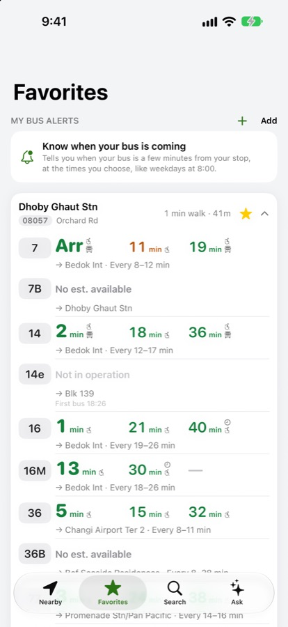
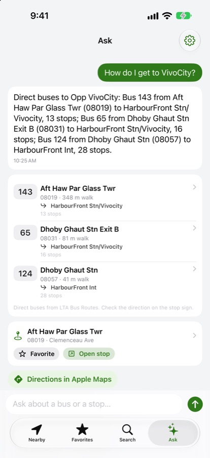

Singapore bus timings & MRT
Live arrival times for every bus stop in Singapore. Know when to leave, see where your bus is, and plan the trip by just asking.
Features
Open the app and the stops around you are already there, with the next three buses for every service and whether there are seats.
Read the guide →Your favourite stop on the Home Screen. The bus you're waiting for counting down on the Lock Screen and in the Dynamic Island.
Read the guide →
Tap a bus to see where it is and how many stops away. Switch on traffic, and see accidents and breakdowns on your route.
“How do I get to VivoCity?” “Last 52 tonight?” Get the buses, where to change and the time door to door. Or ask Siri.
Read the guide →
Pick your bus and your usual times. GoSG tells you when to walk out the door.
Woodlands and Tuas checkpoint photos before you head to JB. How it works
Every station and exit on one map, with directions in Apple Maps.
"When's my next bus?" "Track my bus." "Any traffic incidents near me?"
From LTA DataMall, the Land Transport Authority's official data, for SBS Transit, SMRT, Tower Transit and Go-Ahead buses.
Every few seconds while a stop is open. Times are estimates, so they can jump when a bus speeds up or gets stuck in traffic.
Yes for live times. Your favourites and the stop list stay on your phone.
Yes. Live times, Nearby, Favourites, Search, routes, the bus map, cameras and the MRT map are free, with no ads. GoSG Plus is optional and adds more leave-now alerts and AI answers.
No. Open the app and use it.
iPhone and iPad with iOS 17 or later, and Macs with Apple silicon. English, 简体中文, 繁體中文, Bahasa Melayu, தமிழ் and हिन्दी.
Not yet. Widgets, the Lock Screen and Siri cover the quick look for now.
Use Settings › Send feedback in the app, or email bestappsclub@gmail.com.